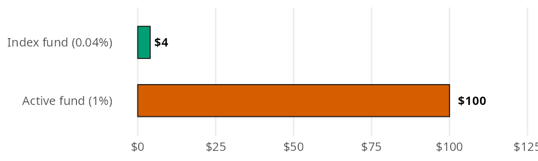
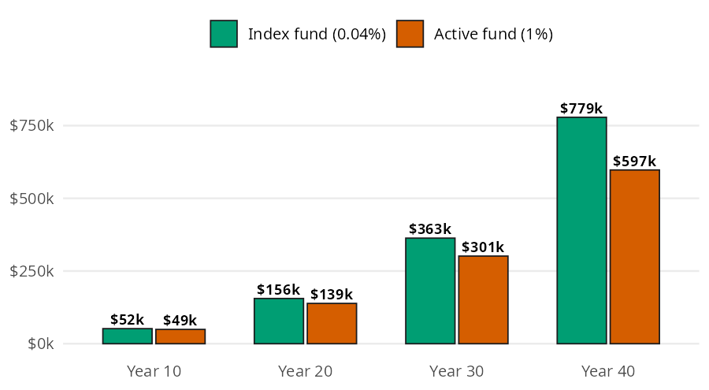

fees = yearly_fee(balance=10000, expense_ratio=[0.0004, 0.01])
feesarray([ 4., 100.])You can’t control what the market does, but you can control what you pay. Index fund math is about that one thing: what fees cost you. A fee looks tiny for a single year, and it comes out every year, so each dollar it takes stops growing. In this page I’ll measure both with yearly_fee() and future_value_after_fees(), using the numbers from the Index Funds chapter of the book.
Both functions accept arrays and follow the conventions in Get started. An expense ratio is a decimal, so a 0.04% fee goes in as 0.0004.
| Function | Returns | Units |
|---|---|---|
| yearly_fee() | the fee a fund takes in one year | dollars (expense_ratio is a decimal) |
| future_value_after_fees() | what monthly contributions grow to after fees | dollars (annual_return and expense_ratio are decimals) |
An expense ratio is the yearly fee a fund charges, as a share of the money you have in it. The chapter puts $10,000 in two funds: a broad index fund that charges 0.04%, and an active fund that charges 1%.
Each bar below is the slice each fund takes from the $10,000 in one year:

yearly_fee() multiplies the balance by the expense ratio. Passing both ratios at once returns both fees:
The index fund charges $4 a year and the active fund charges $100, 25 times as much. Neither number feels large, which is why the fee is easy to miss.
The chapter follows someone who invests $300 a month at a 7% return for 40 years. The two bars at each checkpoint get the same contributions and the same return; the only difference is the fee.

The fee comes out of the return, so the math is the contribution formula from Investing Basics with a smaller rate. future_value_after_fees() subtracts the expense ratio from the return, then compounds the monthly contributions:
index_fund = future_value_after_fees(
contribution=300, annual_return=0.07, expense_ratio=0.0004, years=40
)
active_fund = future_value_after_fees(
contribution=300, annual_return=0.07, expense_ratio=0.01, years=40
)
index_fund, active_fund, index_fund - active_fund(778654.7099256519, 597447.2202993062, 181207.4896263457)After 40 years the index fund grows to about $778,655 and the active fund to about $597,447. Both investors put in the same $144,000. The 1% fee cost $181,207, about 23% of what the index fund investor ended up with.
Passing several horizons to years reproduces every pair of bars in the bar model in one call per fund:
years = [10, 20, 30, 40]
fee_drag = pl.DataFrame({
"years": years,
"index_fund": future_value_after_fees(300, 0.07, 0.0004, years),
"active_fund": future_value_after_fees(300, 0.07, 0.01, years),
}).with_columns(cost_of_fees=pl.col("index_fund") - pl.col("active_fund"))
fee_drag| years | index_fund | active_fund | cost_of_fees |
|---|---|---|---|
| i64 | f64 | f64 | f64 |
| 10 | 51811.297745 | 49163.804042 | 2647.493703 |
| 20 | 155521.199921 | 138612.268548 | 16908.931373 |
| 30 | 363115.764766 | 301354.512736 | 61761.25203 |
| 40 | 778654.709926 | 597447.220299 | 181207.489626 |
The cost of the fee grows faster than the balances do, because the money it takes would have compounded too.
The chapter suggests looking for funds under 0.10%. Passing a range of expense ratios shows what each one leaves after 40 years:
ratios = [0.0003, 0.0004, 0.001, 0.005, 0.01]
pl.DataFrame({
"expense_ratio": ratios,
"fee_on_10k": yearly_fee(balance=10000, expense_ratio=ratios),
"after_40_years": future_value_after_fees(300, 0.07, ratios, 40),
})| expense_ratio | fee_on_10k | after_40_years |
|---|---|---|
| f64 | f64 | f64 |
| 0.0003 | 3.0 | 780841.734192 |
| 0.0004 | 4.0 | 778654.709926 |
| 0.001 | 10.0 | 765675.237266 |
| 0.005 | 50.0 | 685085.676024 |
| 0.01 | 100.0 | 597447.220299 |
The difference between 0.03% and 0.10% is small. The difference between 0.10% and 1% is not.
A few things these functions leave out:
The 0.04% fee looks harmless at $4 a year, but it’s charged on the balance, and the balance gets large. yearly_fee() shows what each fund charges in year 40, using each fund’s own ending balance:
array([ 311.46188397, 5974.47220299])In the last year alone, the active fund takes $5,974 while the index fund takes $311.
With an expense ratio of 0, future_value_after_fees() gives the same answer as future_value_series() from Investing Basics. Comparing the fee free number with the index fund shows how little a low fee costs:
no_fee = future_value_series(contribution=300, rate=0.07 / 12, periods=40 * 12)
no_fee, no_fee - index_fund(787444.0195000092, 8789.30957435735)A 0.04% fee costs about $8,789 over 40 years, compared with $181,207 for a 1% fee.
Fees are the one part of investing you control. yearly_fee() turns an expense ratio into dollars for one year, and future_value_after_fees() shows what that fee costs over a working lifetime. A 1% fee can cost close to a quarter of your money, so look for broad index funds that charge under 0.10%.